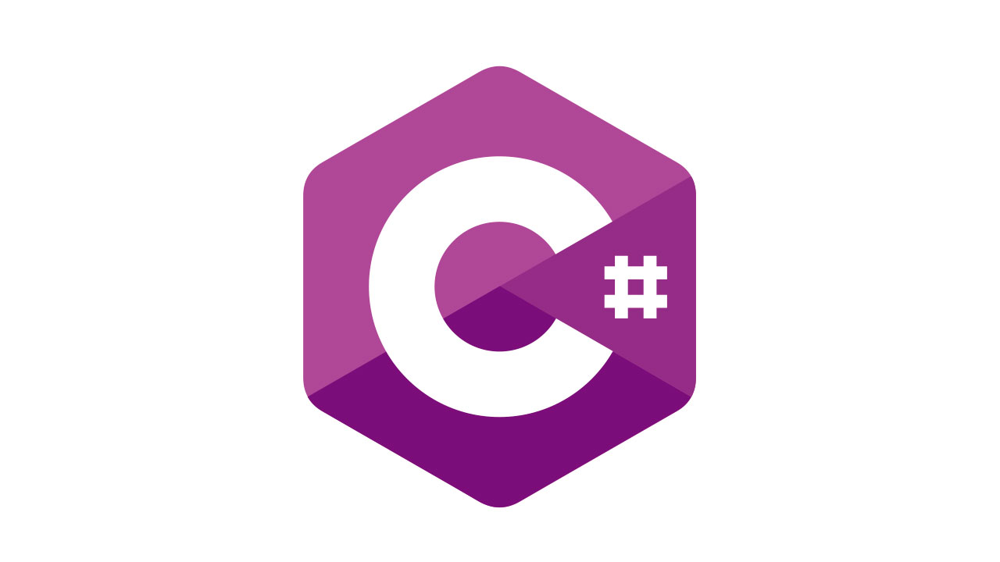

На сегодняшний момент язык программирования C# один из самых мощных, быстро развивающихся и востребованных языков в ИТ-отрасли.
В настоящий момент на нем пишутся самые различные приложения: от небольших десктопных программок до крупных веб-порталов
и веб-сервисов, обслуживающих ежедневно миллионы пользователей. C# уже не молодой язык и как и вся платформа .NET уже прошел большой путь. Первая версия языка вышла вместе с релизом Microsoft Visual Studio .NET в феврале 2002 года. Текущей версией
языка является версия C# 12, которая вышла 14 ноября 2023 года вместе с релизом .NET 8. C# является языком с Си-подобным синтаксисом и близок в этом отношении к C++ и Java. Поэтому, если вы знакомы с одним из этих языков, то овладеть C# будет
легче. C# является объектно-ориентированным и в этом плане много перенял у Java и С++.
Например, C# поддерживает полиморфизм, наследование, перегрузку операторов, статическую типизацию. Объектно-ориентированный подход позволяет решить задачи по
построению крупных, но в тоже время гибких, масштабируемых и расширяемых приложений. И C# продолжает активно развиваться, и с каждой новой версией появляется все больше интересных функциональностей. Роль платформы .NET Когда говорят C#, нередко
имеют в виду технологии платформы .NET (Windows Forms, WPF, ASP.NET, .NET MAUI). И, наоборот, когда говорят .NET, нередко имеют в виду C#. Однако, хотя эти понятия связаны, отождествлять их неверно. Язык C# был создан специально для работы с фреймворком
.NET, однако само понятие .NET несколько шире. Как-то Билл Гейтс сказал, что платформа .NET - это лучшее, что создала компания Microsoft. Возможно, он был прав. Фреймворк .NET представляет мощную платформу для создания приложений. Можно выделить
следующие ее основные черты:
FileInfo
Некоторые полезные методы и свойства класса FileInfo:
CopyTo(path): копирует файл в новое место по указанному пути path
Create(): создает файл
Delete(): удаляет файл
MoveTo(destFileName): перемещает файл в новое место
Свойство Directory: получает родительский каталог в виде объекта DirectoryInfo
Свойство DirectoryName: получает полный путь к родительскому каталогу
Свойство Exists: указывает, существует ли файл
Свойство Length: получает размер файла
Свойство Extension: получает расширение файла
Свойство Name: получает имя файла
Свойство FullName: получает полное имя файла
Для создания объекта FileInfo применяется конструктор, который получает в качестве параметра путь к файлу:
FileInfo fileInf = new FileInfo(@"C:\app\content.txt");
File
Класс File реализует похожую функциональность с помощью статических методов:
Copy(): копирует файл в новое место
Create(): создает файл
Delete(): удаляет файл
Move: перемещает файл в новое место
Exists(file): определяет, существует ли файл
Пути к файлам
Для работы с файлами можно применять как абсолютные, так и относительные пути:
// абсолютные пути
string path1 = @"C:\Users\eugene\Documents\content.txt"; // для Windows
string path2 = "C:\\Users\\eugene\\Documents\\content.txt"; // для Windows
string path3 = "/Users/eugene/Documents/content.txt"; // для MacOS/Linux
// относительные пути
string path4 = "MyDir\\content.txt"; // для Windows
string path5 = "MyDir/content.txt"; // для MacOS/Linux
Поддержка нескольких языков. Основой платформы является общеязыковая среда исполнения Common Language Runtime (CLR), благодаря чему .NET поддерживает несколько языков: наряду с C# это также VB.NET, C++, F#, а также
различные диалекты других языков, привязанные к .NET, например, Delphi.NET. При компиляции код на любом из этих языков компилируется в сборку на общем языке CIL (Common Intermediate Language) - своего рода ассемблер платформы .NET. Поэтому при
определенных условиях мы можем сделать отдельные модули одного приложения на отдельных языках. Кроссплатформенность. .NET является переносимой платформой (с некоторыми ограничениями). Например, последняя версия платформы на данный момент - .NET
8 поддерживается на большинстве современных ОС Windows, MacOS, Linux. Используя различные технологии на платформе .NET, можно разрабатывать приложения на языке C# для самых разных платформ - Windows, MacOS, Linux, Android, iOS, Tizen. Мощная библиотека
классов. .NET представляет единую для всех поддерживаемых языков библиотеку классов.
И какое бы приложение мы не собирались писать на C# - текстовый редактор, чат или сложный веб-сайт - так или иначе мы задействуем библиотеку классов .NET. Разнообразие
технологий. Общеязыковая среда исполнения CLR и базовая библиотека классов являются основой для целого стека технологий, которые разработчики могут задействовать при построении тех или иных приложений. Например, для работы с базами данных в этом
стеке технологий предназначена технология ADO.NET и Entity Framework Core.
Поддержка нескольких языков. Основой платформы является общеязыковая среда исполнения Common Language Runtime (CLR), благодаря чему .NET поддерживает несколько языков: наряду с C# это также VB.NET, C++, F#, а также
различные диалекты других языков, привязанные к .NET, например, Delphi.NET. При компиляции код на любом из этих языков компилируется в сборку на общем языке CIL (Common Intermediate Language) - своего рода ассемблер платформы .NET. Поэтому при
определенных условиях мы можем сделать отдельные модули одного приложения на отдельных языках. Кроссплатформенность. .NET является переносимой платформой (с некоторыми ограничениями). Например, последняя версия платформы на данный момент - .NET
8 поддерживается на большинстве современных ОС Windows, MacOS, Linux. Используя различные технологии на платформе .NET, можно разрабатывать приложения на языке C# для самых разных платформ - Windows, MacOS, Linux, Android, iOS, Tizen. Мощная библиотека
классов. .NET представляет единую для всех поддерживаемых языков библиотеку классов.
И какое бы приложение мы не собирались писать на C# - текстовый редактор, чат или сложный веб-сайт - так или иначе мы задействуем библиотеку классов .NET. Разнообразие
технологий. Общеязыковая среда исполнения CLR и базовая библиотека классов являются основой для целого стека технологий, которые разработчики могут задействовать при построении тех или иных приложений. Например, для работы с базами данных в этом
стеке технологий предназначена технология ADO.NET и Entity Framework Core.
private void foto_Click(object sender, RoutedEventArgs e)
{
OpenFileDialog openFileDialog = new OpenFileDialog();
openFileDialog.Filter = "jpg (*.jpg)|*.jpg|All files (*.*)|*.*";
openFileDialog.CheckFileExists = true;
openFileDialog.CheckPathExists = true;
// Открытие диалогового окна
if (openFileDialog.ShowDialog() == true)
{
// Установка изображения в элемент Image
img.Source = new BitmapImage(new Uri(openFileDialog.FileName));
// Сохранение данных изображения
imageName = openFileDialog.SafeFileName;
imageSource = openFileDialog.FileName;
// Получение изображения из элемента
BitmapImage bitmapImage = new BitmapImage(new Uri(imageSource));
// Настройка энкодера для png файлов
BitmapEncoder encoder = new PngBitmapEncoder();
encoder.Frames.Add(BitmapFrame.Create(bitmapImage));
// Путь для сохранения изображения
string rootPath = @"ПУТЬ";
string imagePath = System.IO.Path.Combine(rootPath, "img", imageName);
// Создание папки, если ее нет
System.IO.Directory.CreateDirectory(System.IO.Path.Combine(rootPath, "img"));
// Сохранение изображения
using (FileStream fileStream = new FileStream(imagePath, FileMode.Create))
{
encoder.Save(fileStream);
}
}
}
Для построения графических приложений с богатым насыщенным интерфейсом - технология WPF и WinUI, для создания более простых графических приложений - Windows Forms. Для разработки кроссплатформенных мобильных и десктопных приложений - Xamarin/MAUI. Для
создания веб-сайтов и веб-приложений - ASP.NET и т.д. К этому стоит добавить активной развивающийся и набирающий популяность Blazor - фреймворк, который работает поверх .NET и который позволяет создавать веб-приложения как на стороне сервера, так
и на стороне клиента.
 А в будущем будет поддерживать создание мобильных приложений и, возможно, десктоп-приложений. Производительность. Согласно ряду тестов веб-приложения на .NET в ряде категорий сильно опережают веб-приложения,
построенные с помощью других технологий. Приложения на .NET в принципе отличаются высокой производительностью. Также еще следует отметить такую особенность языка C# и фреймворка .NET, как автоматическая сборка мусора. А это значит, что нам в большинстве
случаев не придется, в отличие от С++, заботиться об освобождении памяти. Вышеупомянутая общеязыковая среда CLR сама вызовет сборщик мусора и очистит память. .NET Framework и .NET 8 Стоит отметить, что .NET долгое время развивался премущественно как
платформа для Windows под названием .NET Framework. В 2019 вышла последняя версия этой платформы - .NET Framework 4.8. Она больше не развивается С 2014 Microsoft стал развивать альтернативную платформу - .NET Core, которая уже предназначалась для
разных платформ и должна была вобрать в себя все возможности устаревшего .NET Framework и добавить новую функциональность. Затем Microsoft последовательно выпустил ряд версий этой платформы: .NET Core 1, .NET Core 2, .NET Core 3, .NET 5. И текущей
версией является расматриваемая в этом руководстве платформа .NET 8. Поэтому следует различать .NET Framework, который предназначен преимущественно для Windows, и кросплатформенный .NET 8. В данном руководстве речь будет идти о C# 12 в связке с .NET
8, поскольку это актуальная платформа.